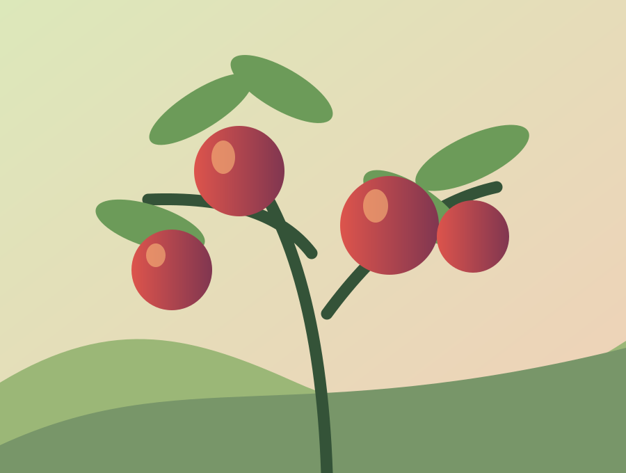

Du lundi au vendredi
10h00 – 17h00 selon les informations du site d’origine. À confirmer avant déplacement.
En vente directe à Suzanne et dans plusieurs circuits de distribution régionaux, les fruits de l’exploitation se découvrent à proximité de chez vous.

Les Vergers Courtois proposent la vente de leurs récoltes directement depuis leur exploitation située au 10, rue de la Croix des Arbres, à Suzanne. Pendant la période de cueillette, la boutique accueille les visiteurs suivant des horaires saisonniers. Hors de cette période, les achats s’organisent sur rendez-vous.
Comme les fruits ne sont pas disponibles de manière constante tout au long de l’année, nous vous invitons à appeler avant de vous déplacer. L’équipe pourra vous indiquer quelles variétés sont proposées, quels produits transformés sont accessibles et quelles sont les modalités de retrait.
Ces informations concernent l’exploitation à Suzanne. Le Pressoir des Ardennes possède une adresse et un numéro de téléphone distincts, au Chesne.

10h00 – 17h00 selon les informations du site d’origine. À confirmer avant déplacement.
9h00 – 16h00 selon les informations publiées. Les horaires peuvent varier.
Contactez les Vergers Courtois pour connaître les possibilités d’achat.
Point de vente cité par les Vergers Courtois. Disponibilité et références à vérifier directement auprès du magasin.
Autre lieu de distribution indiqué par l’exploitation. Contactez le point de vente pour connaître ses horaires actuels.
La vente par circuit collectif est également mentionnée sur le site d’origine. Les conditions de commande peuvent évoluer.
L’exploitation mentionne un approvisionnement de certains commerçants et distributeurs du Grand Est et d’Île-de-France.
Pour connaître les disponibilités, contactez les Vergers Courtois à Suzanne.
